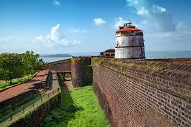

Historical Monuments

1. Basilica of Bom Jesus
Details: A UNESCO World Heritage Site, this baroque church houses the mortal remains of St. Francis Xavier.

2. Fort Aguada
Details: A well-preserved 17th-century Portuguese fort offering stunning views of the Arabian Sea.